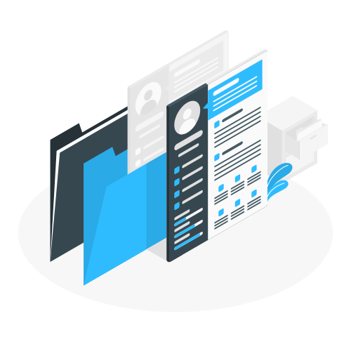

Mon parcours scolaire et professionnel
Bachelor Développement Web
Septembre 2021 - en cours...
Je suis actuellement un étudiant de 2ème année en Développement Web à l'école IIM de Leonard De Vinci. Avec mon DUT Informatique en poche, j'ai pu rejoindre l'IIM dans le but d'obtenir un Mastère de Développement Web. Grâce à l'expérience acquise lors de mon DUT, j'ai pu directement entrer en 2ème année afin d'obtenir, dans un premier temps, un Bachelor en 3ème année, puis par la suite, un Mastère en 5ème année. Ma filière est spécialisé dans le Développement Web, je suis totalement focalisé sur ce qui m'interesse et me permet d'aprendre énorménent de choses sur le domaine qui me passione.
Stage de Développement Web à l’École Militaire de Paris
Mai 2021 - Juillet 2021
Afin de finaliser mon DUT Informatique, j’ai effectué un stage à l’École Militaire de Paris en développement web. J'ai rejoint l’équipe SARO de l'État Major de l'Armée de Terre (EMAT), et ai eu l’occasion de travailler sur une application web de compte-rendu.
Le projet consistait à créer un site web possédant un tableau interactif. Le but de ce projet est de pouvoir l’utiliser en tant que tableau de bord ou bien encore de compte-rendu. J'ai, de plus, pu travaillé sur un autre projet : le projet AUGURE, qui est un site qui permet de voter pour les prochains généraux.
Même si ce stage ne s'est pas déroulé en entreprise, j’ai pu tout de même acquérir de l’expérience professionnelle. De plus, j’ai eu l’occasion de m’améliorer dans plusieurs langages de développement web tels que le PHP et le JSON, pour le back-end, ou encore le Javascript, le HTML et le CSS, pour le front-end. J’ai pu également découvrir de nouveaux logiciels, tel que XAMPP, et travailler dans des conditions bien différentes de celles que j’ai l’habitude de connaître en université.
DUT Informatique
Septembre 2019 - Juillet 2021
Je suis un étudiant de 2ème année à l'IUT Paris Descartes. Durant ces 2 années en études supérieures, j'ai pu me créer de véritables bases dans le domaine de l'informatique, et plus particulièrement dans le développement web. Malgré la crise sanitaire, j'ai réussi à apprendre et maitriser plusieurs langages et outils numérique. Grâce aux nombreux projets sur lesquels j'ai travaillé, j'ai pu mettre mes connaissances à l'épreuve tout en apprenant davantage. C'est grâce à ce DUT que j'ai découvert ma passion pour le développement web et je compte bien poursuivre mes études pour me spécialiser dans ce domaine !
Bac STI2D
Septembre 2017 - juin 2019
J'ai obtenu mon Bac STI2D avec mention Très Bien en 2019 dans le lycée La Salle Saint Denis (anciennement connu sous le nom de Jean Baptiste de la Salle). Durant mes années de Première et Terminale, j'ai eu l'occasion de me préparer à mes futures études supérieures. Ayant choisi la spécialité Système Informatique et Numérique (ou SIN) en Première, j'ai pu me familiariser très tôt avec le domaine de l'informatique.
Brevet des collèges et Stage de 3ème
Septembre 2016 - juin 2016
Durant mes années au collège Saint Vincent De Paul, j'ai pu découvrir le monde professionnel. En 3ème, j'ai effectué un stage d'une semaine dans une agence d'assurance. Cela m'a notamment permis de m'exercer dans le domaine de la relation clientèle. J'ai également effectuer une journée bénévole avec La Banque alimentaire. Cette journée consistait à récolter des objets de première nécessité pour les personnes les plus démunies.